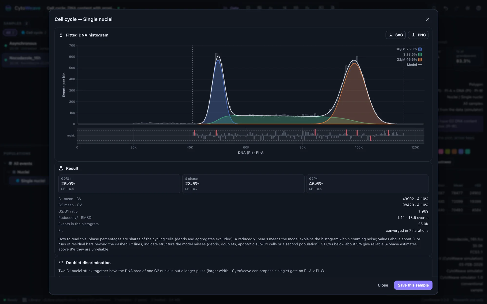
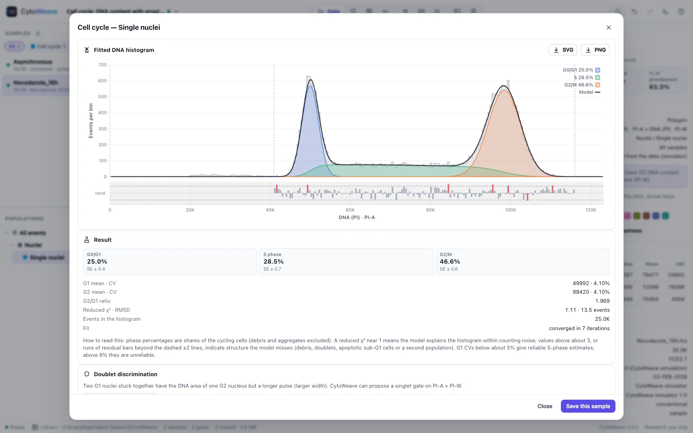
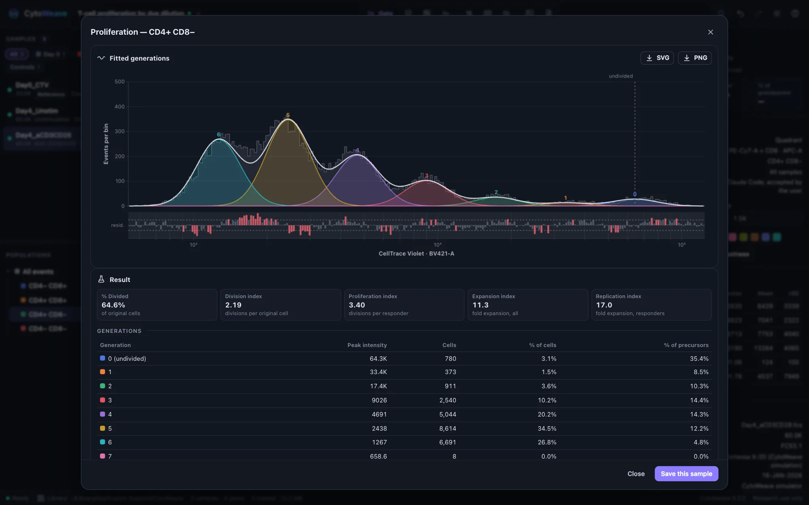
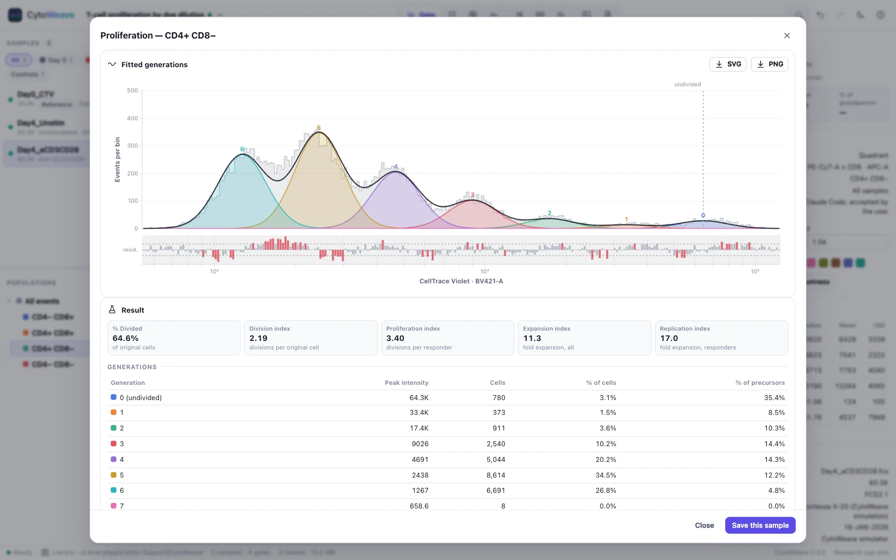
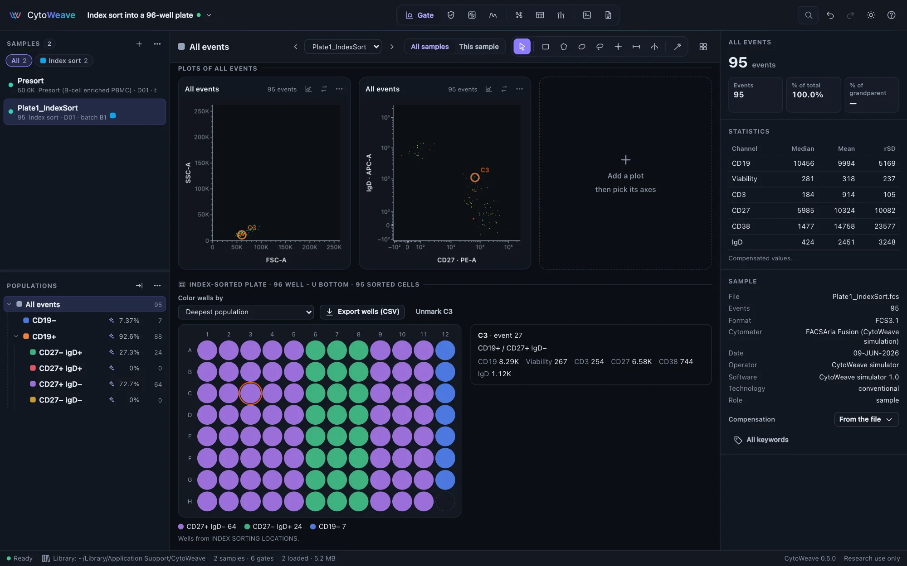
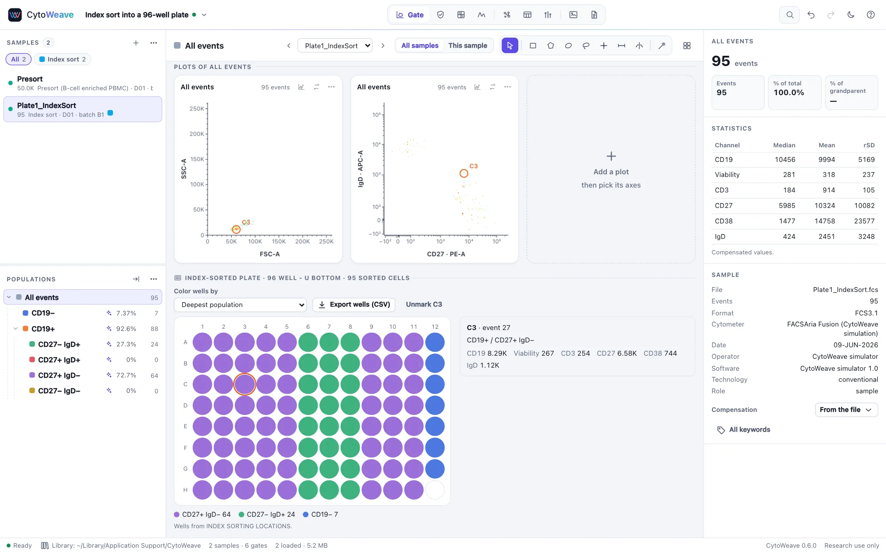

Cell cycle, proliferation and index sorting
Models for DNA content and dye dilution, and the plate view for index sorts. All three work on a population you have gated.
Cell cycle


- Gate single nuclei. Doublets of two G1 nuclei have the DNA area of one G2 nucleus but a longer pulse, so gate on the DNA dye's area against its width (for example PI-A against PI-W). The dialog's Suggest a singlet gate proposes one.
- Right-click the singlet population and choose Cell cycle (DNA content)….
- Choose the DNA channel (the linear area parameter of the dye) and the model:
- Dean–Jett–Fox (Fox 1980) fits the whole histogram: two Gaussians and a broadened quadratic S phase. The usual choice for clean, well-resolved histograms.
- Watson pragmatic (Watson et al. 1987) fits Gaussians to the outer flanks of G1 and G2 only; S phase is what remains between them. Robust when S phase has an unusual shape.
- Optionally model debris (exponential) and aggregates (G1+G2, G2+G2), constrain the G2/G1 ratio, or tie the G2 CV to the G1 CV.
The result gives the G0/G1, S and G2/M percentages of the cycling cells (debris and aggregates excluded) with standard errors, the G1 and G2 means and CVs, the G2/G1 ratio and the goodness of fit. A reduced χ² near 1 means the model explains the histogram within counting noise; above about 3, or runs of residual bars beyond the dashed ±2 lines, the model misses something (debris, doublets, apoptotic sub-G1 cells or a second population). G1 CVs below about 5% give reliable S-phase estimates; above 8% they do not.
The fitted histogram exports as SVG or PNG. Save this sample stores the fit with the workspace, and Run on all samples fits every sample with the same settings. On the simulated cultures, Dean–Jett–Fox recovers the true phase fractions within 1.6 points and Watson within 2.
Proliferation


Each division halves a cell's dye, so the dye histogram of a proliferating population is a series of peaks, one per generation. CytoWeave fits a generation mixture model to it.
- Gate the responding population (for example live CD4 T cells), right-click it and choose Proliferation (dye dilution)….
- Choose the Dye channel: CellTrace Violet, CFSE or a similar dye (compensated, linear values).
- Set the Undivided peak (generation 0). An unstimulated control marks it exactly (Take from a control…); otherwise the brightest substantial peak is used and refined.
- Choose the number of Generations (automatic, up to 10) and whether to fit the spacing (the dye lost per division). Off, generations are exactly 2-fold apart.
The result lists the cells in each generation and the indices, as defined by Roederer (2011):
| Index | Meaning |
|---|---|
| Division index | The average number of divisions of all the original cells, including those that never divided |
| Proliferation index | The average number of divisions of the cells that divided at least once |
| Expansion index | The fold expansion of the whole culture |
| Replication index | The fold expansion of the cells that responded |
On the simulated cultures, the division index is within 3% of the truth. Run on all samples fits every sample with the same settings, sharing a fixed undivided peak.
Index sorting


An index sort records the well each sorted cell went to, so every well's cell can be traced back to its phenotype. When a sample carries index-sort data, the Gate view shows its plate below the plots. Wells are read from BD FACSDiva's INDEX SORTING LOCATIONS keyword, or from event parameters such as "Index X" and "Index Y" or "Well Row" and "Well Column"; the plate size comes from the sorter's device type or from the positions.
- Color wells by the deepest population each cell falls in, by one population, or by a channel's value. Selecting a population in the tree colors its wells and counts them.
- Point at a well to see its cell: the event, its population and its marker values.
- Click a well to mark its cell on every plot of the sample, circled and labeled; click again or Unmark to clear it.
- Export wells (CSV) writes one row per sorted cell: its well, row, column, event, population and every channel's value.
Gate the presort sample first: the gates apply to the sorted events too. Wells that received more than one event are marked and listed.